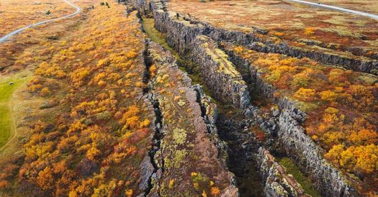
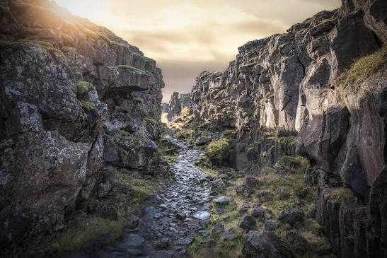
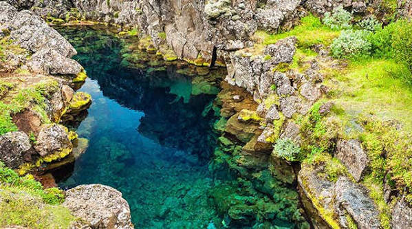
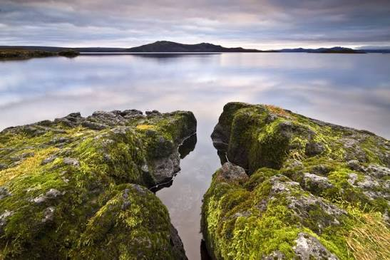

Náttúra Þingvalla
Á undanförnum áratugum hafa rannsóknir leitt í ljós að Þingvellir eru náttúruundur á heimsvísu þar sem jarðsagan og vistkerfi Þingvallavatns mynda einstaka heild.Það eru gríðarleg verðmæti og náttúruundur að geta fylgst með þróun og myndum nýrra tegunda á einum stað eins og í Þingvallavatni. Þingvallasvæðið er hluti flekaskila Atlantshafshryggjarins sem liggja um Ísland. Þar má sjá afleiðingar gliðnunar jarðskorpunnar í gjám og sprungum svæðisins.




© 2026 Róbert Arnþórsson